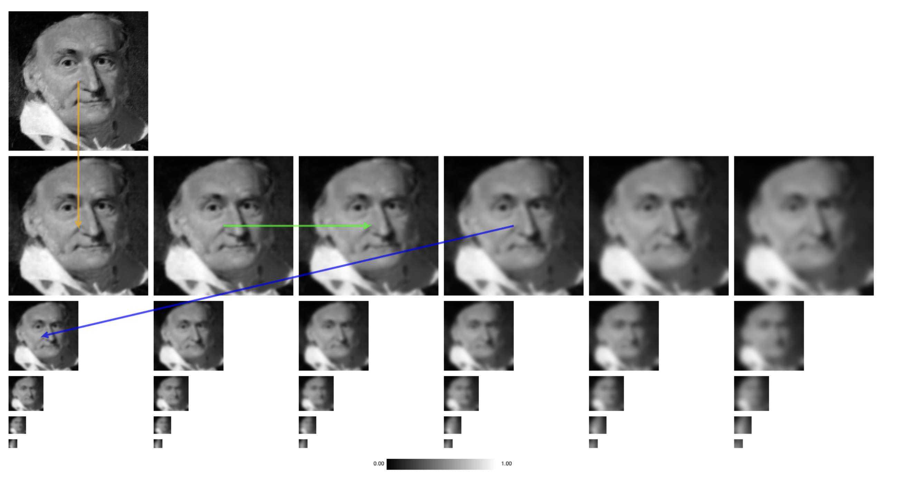
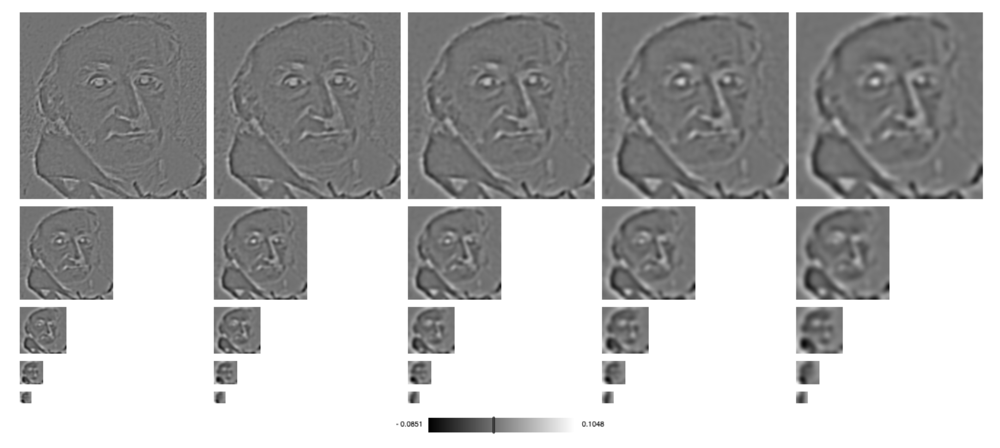
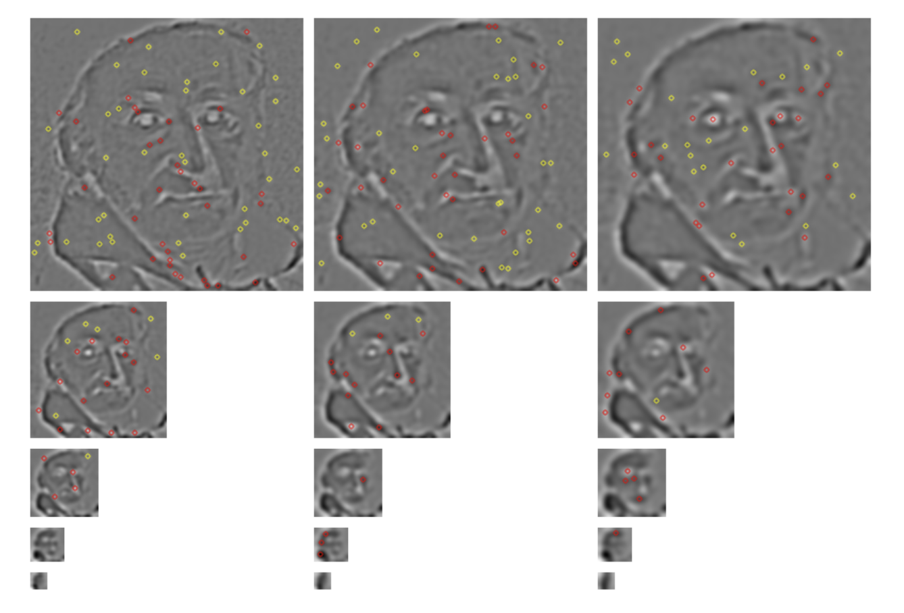
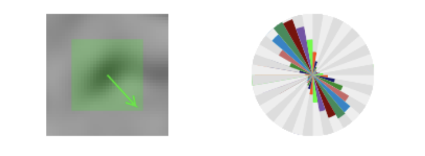
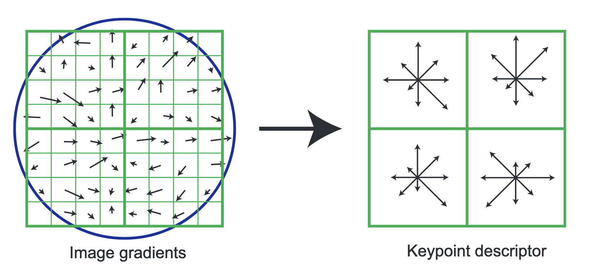
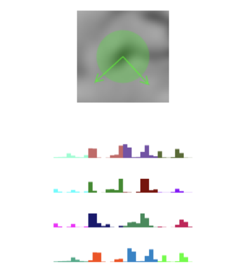

Image Stitching
intro
Whether it's been the panorama mode in your phone's camera app or the far-off landscapes captured by the Curiosity rover, image stitching has been the basis for a variety of interesting images.

But how does it work? There's not an immediately intuitive algorithm for combining two different images of the same scene — with no other info but the images themselves.
I'm going to assume you have general familiarity with linear algebra and a loose background in single-variable calculus (ok, I'll assume you know what a partial derivative is, too).
how does it work?
This section is essentially a high-level summary of Pleasing Panoramas and Matrix Multiplication, which is a nice article and my starting point for all of this!
Another important disclaimer: unless stated otherwise, none of the images in this article were created by me, mostly because making some of the example figures for this would involve quite a lot of work (and actual implementation of these algorithms) on my end — and it's already been done.
You may wonder why this section is so short. It's because, in my opinion, the stitching part of image stitching is the easy part.
So. We have two images that we'd like to combine into one mega-image with the full details of both:


First off, us humans can tell this is the same scene and even accurately predict where the images are relative to one another because we can identify areas of the image we know correspond to the same object — for example, the top left corner of the monitor is in both images. Naively, we could just try and superimpose these images and shift them until the top left corner of the monitor in both images lines up:

This doesn't work. Why? Well, traditionally when panoramas are taken, the photographer rotates around and periodically takes photos from different perspectives. Our algorithm just now assumes that these two photos were taken from the same perspective and so lining them up side by side will just work, but this is certainly not the case. Even if a photographer were to try a smooth pan along a straight path, humans aren't perfect, and so we'll still get variations in perspective.
Another problem with our algorithm is that it only checks if one point lines up between the two images, and ignores any other disparities. If we could find a lot of common points between the two and line them all up, the errors would get increasingly subtle. Let's pick about 10 for now:


Okay, now we have one half of the problem fixed. As for the other: maybe instead of just shifting images over, we could try accounting for a possible change in perspective by applying some linear transformation to the image:
This at first sounds way nicer — after all, we can now actually skew images that were taken at a different angle! But we've lost something important: translation.
Why can't linear transformations encode translation again?
Translations (or any function with a constant term) aren't linear! We define linearity as a transformation being additive (\(f(a+b) = f(a) + f(b)\)) and homogenous (\(\lambda f(a) = f(\lambda a)\)), and addition of a constant isn't homogenous! Example:
Let \(f\) be a linear transformation from \(\mathbb{R}^2 \to \mathbb{R}^2\) such that \(f(v)\) (where \(v \in \mathbb{R}^2\)) is equal to \(v + \begin{pmatrix} 1 \\ 1 \end{pmatrix} \).
Now let \(u = \begin{pmatrix} 1 \\ 2 \end{pmatrix} \) and \(\lambda = 2\):
As we can see, \(f(\lambda u) \neq \lambda f(u)\), and thus \(f\) is not homogenous and not linear!
There's a way out: using homogenous coordinates. We're going to add a third dimension \(z\) to all our coordinates and decide that our image is on the plane of \(z=1\). This means that our previous \((x,y)\) coordinates are now going to be \((x,y,1)\). Now, we'd like to start thinking about linear transformations in this space, but we're going to impose one more restriction first. If any linear transformation results in \(z\) not equal to 1 (let's call that value \(w\)) we're just going to treat it as if it was \((\frac{x}{w}, \frac{y}{w}, 1)\), effectively projecting all of 3d space beyond the \(z=1\) plane onto it.
If you think about it, this is what cameras do — an image is a 2d projection of points in 3d space:

The primary benefit of all this is that we can simulate affine transformations like translation in 2d space with normal linear transformations in 3d space. Translating an image on top of another in 3d space is as simple as just rotating one of the corresponding planes a bit (resulting in it casting more of a "shadow" onto the final image):

Just from this image alone, it's pretty clear to see how applying this method to images behind the camera are going to lead to some bad results: projecting the camera's point of view onto a plane only works if the POV actually intersects the plane (which it won't if it's facing away from it).
Now that we can properly manipulate images with linear transformations (albeit in these tricky homogenous coordinates), we can get to trying to align the points. We know we want to apply some linear transformation to points in one image so that they line up with those of another:
Again, the point may lie somewhere beyond the actual plane and we're just going to reproject that on: \((\frac{x'}{w}, \frac{y'}{w}, 1) = (wx', wy', w)\) so we denote it that way here. Matrix multiplication corresponds to a system of equations, and so now we can start thinking about solving for the constants in the matrix that will represent our transformation:
This can be simplified:
We know what we want \(x'\) and \(y'\) to be (the coordinates of the corresponding point in the other image), so we're left with just the matrix elements as unknowns!
We have nine variables, so we need at least nine equations to approximate them with a linear regression. As we've just seen, each pair of points in the images gives us two equations, and so we need at least 5 points to compute some values. We've got twice that amount, thankfully.
Note again that we're using linear regression to find these values and so this is an approximation, not an exact solution. Some thought can reveal how an exact solution oftentimes won't be entirely possible: what if we chose just totally different points that we thought were part of the same object but weren't for some of our 10 points? It's possible that it's impossible to match up all of the chosen points perfectly.
Once we have the values of \(a\) through \(i\), we can actually apply that transformation to the points in one of the images and then re-project them onto the \(z=1\) plane, giving us our final image! Do some blurring around the overlap region and we're good to go:

Woah! Not bad! Ok… not great, as I still see some noticeable disparities, but a lot better than anything else we have. We can crop this down for our standard panorama:

how do we find those points?
Previously, we just picked a bunch of points we manually identified as being the same thing across the two images. I don't know about your phone, but mine certainly doesn't ask me to check for common points with pixel precision whenever it makes a panorama, so there must be some way to automatically pick them.
On top of that, we know that picking more common points leads to a better panorama, so it'd be nice to have hundreds of points rather than tens of them.
So, we'd like to have some algorithm for identifying these common points automatically. My first thought here was to wonder how that was even possible algorithmically: maybe we'd need some sort of ML model?
There are in fact purely algorithmic methods for this: they revolve around detecting features in images and checking if the features have the same descriptors. How do we detect features algorithmically? Through laborious multi-step procedures riddled with math. Fun.
SIFT
SIFT — Scale Invariant Feature Transform — is perhaps the most well-known algorithm that finds these keypoints. Invented by David Lowe, it's goal is to find keypoints that are invariant under changes in lighting, noise, rotation, and image scale.
Sources and Further Reading
Scale-Space Extrema
We begin by taking our image and doubling its size with bilinear interpolation as well as normalizing it.
Then we convolve it with a Gaussian kernel. We then convolve that result with the same kernel, and keep repeating this until we have a set of images with increasing amounts of blur. We then take the third to last image in this row, downsample it by 2x, and then repeat the process of blurring repeatedly all over again. This is continued until the images are too small to reasonably progress: and then we are left with multiple sets of images of varying blurredness and of exponentially decreasing size.

These rows you see are also known as octaves.
The motivation behind what we're doing at each step of the algorithm is going to be very confusing, unfortunately.
I failed to find any straightforward explanation of the primary 2x upscaling step. Lowe's original paper cites vague "performance" reasons and some brief intuiton that I can't seem to follow. My personal take is that maybe it's useful because it enables having one more octave than normal?
The big question here is really about this bizarre array of images we're building up with. We're actually creating something known as a scale space. The scale space representation of an image, according to Lowe and Wikipedia at least, is the family of images \(I(x, y; \sigma )\) defined by the convolution of an image \(f(x,y)\) with a Gaussian filter \(G(x,y,\sigma)\). The confusing part of this is that all this varies is the \(\sigma\) of the filter (i.e. the blurring steps in our process) and so it doesn't explain why we downscaled and repeated it for smaller images.
Why a Gaussian filter?
I don't know. Apparently it leads to some nicer axioms about scale spaces as is generally just the canonical way of doing it (but you could use a different filter??)
Lowe thankfully does give some intuition for scale spaces, though: our goal is to find keypoints that are invariant to scale change, so we'd like to find features that ar estable across all scales. Reasons I've seen in other sources for the blurring part is because it "supresses small-scale structures."
Now, we take the differences between adjacent images in these rows:

For the next step, we need to step back for a second and think about what our rows really are: we established earlier that scale space is a family of images described by \(I(x,y,\sigma)\). So, by generating some of these images for increasing values of \(\sigma\), we're really just sampling this 3d space at various points along the \(\sigma\) axis. Neighbors in the row are thus also actually nearby in scale space!
Using this, we can look for extrema in scale space. We consider the 26 neighbors of a pixel in one of our images to be the eight pixels around it in its image, the nine pixels at the same location on the previous image in a row, and the nine pixels on the next image in the row. If our pixel's value is the greatest out of all of its neighbors, then it's an extrema!
Let's retrace our steps for a second. We had a bunch of rows of six images. We then took the differences between them, bringing us to 5 images. Then, we compared the pixels of an image to the pixels all around it in scale space, which necessitated knowing the pixel values of the images left and right of it in the row (meaning we couldn't use the first and last images), bringing us to 3.

Pictured are the remaining 3 images per octave with the extrema marked on them. Yellow points are extrema that correspond to pixels with extremely low absolute values (likely due to noise), and are thus thrown away.
Yes. It's called the difference of Gaussians and this is all apparently approximating the Laplacian of the scale space function \(I(x, y, \sigma)\).
What's a Laplacian?
I don't really get them, to be honest. It's apparently the divergence of the gradient. They also have something to do with the average __ of the values around them (rate of change? values? I've seen both claimed, which makes it doubly confusing).
Keypoint Localization
These extrema have very discrete coordinates (as they're just pixels we found), and we'd prefer more precise values to make matching them up later easier. We could interpolate the locations of the extrema by using the quadratic Taylor expansion of the scale space function with the origin set at the point in question:
where \(I\) and its derivatives are calculated numerically at that point and \(\mathbf{x}=(x,y,\sigma)^T\) is the offset from the point. The derivative of this approximation with respect to \(\mathbf{x}\) is then finding its root, yielding an expression for the offset of the more precise extrema \(\hat{\mathbf{x}}\):
The continuous coordinates allow for the ruling out of features that lie along edges, which aren't nice features because they're invariant along translations parallel to the edge (as that would result with them still being on the edge).
Via principal curvatures of the scale space function, supposedly.
Our keypoints are less numerous now, as we've eliminated both the low-contrast ones (with low absolute values) and the ones that lie along edges.
Reference Orientation
Now, we assign orientations to all of our keypoints:
- We begin by numerically computing the gradient of the scale space function for each pixel in a rectangular region around the point
- We divide the directions from \(0^\circ\) to \(360^\circ\) into a number of bins (in this case we'll pick 36)
- We then take the direction of each of the gradient vectors in the region and increment the bin it falls into by the magnitude of the gradient
- The histogram is then smoothed via repeated box blurs
- We pick the biggest bin as the orientation
Here's what it'd look like for the corner of Gauss' mouth in our image:

For once, it's just a fancy name for something we've all already seen: this filter.
Except here it's presumably 1d, so:
Keypoint Descriptor
We'd next like to encode the surroundings of the keypoint somehow. One naive strategy would be to simply store the intensities of the pixels around it, but these could change drastically with a shift in perspective or lighting.
The strategy used in SIFT is actually based upon how neurons in the visual cortex function: they respond to gradients at a particular orientation with some tolerance for translational shifts. This was previously hypothesized to be for recognizing objects under a variety of 3d viewpoints, so SIFT draws inspiration from it.
Much like last time, we start by computing the gradient at various points in a region around the keypoint (albeit with a circular region this time). We then build histograms for the gradient directions (weighted by magnitude again) for various subregions of the circle. Here's a loose visualization from one of Lowe's papers on what this looks like graphically for 4 subregions:

Here's what a 16x16 descriptor array (aka histograms for 16 subregions) would look like for the same point of the image as earlier:

Note an implementation detail here: we're actually doing all this math in a coordinate space where the orientation of the keypoint is treated as the y axis, making the descriptor relative to the keypoint and thus invariant under rotation.
A Step Back
And with that, the bulk of the work is over! We've detected a bunch of keypoints with assigned orientations and descriptors. Let's recap how what we did helped:
- All those downscaled and blurry images helped our keypoints be invariant to scale and minor shifts in perspective
- Our filtering out of low contrast and edge keypoints helped eliminate unstable keypoints that likely wouldn't be invariant to simple changes in illumination
- Our descriptors are relative to point and its orientation, and thus invariant under rotation/translation
- We also normalize and threshold the histograms we operate upon to make sure that they're invariant global shifts in illumination (normalization) and aren't thrown off by any major local lighting changes (thresholding)
Matching
Now that we have these robust keypoints for images, we need to actually match them up. There's actually a lot more logic here, too (our old friend the Hough transform actually makes an appearance!), but I'm getting real tired of talking about SIFT, so I'm gonna make it quick.
Broadly, we look for keypoints in the other image within a given Euclidean distance of the descriptor vector (the representation of those histograms). We then take the ratio of the closest keypoint in the other image to the second-closest keypoint and drop any with a ratio of greater than 0.8 which prevents false positives.
There's a bunch more work into optimizing the matching process (as you might have hundreds of thousands of keypoints per image) and eliminating outliers/errors, but I'll leave you to investigate that on your own in the Wikipedia page.
SURF
SIFT is pretty old: it was invented in 1999. Since then, there's been some advancements in the field of image stitching. One that came after it in 2006 was SURF — Speeded Up Robust Features — and it boasted faster speeds and more robust keypoints than SIFT. It builds upon some of the steps we talked about in SIFT:
- Much like how SIFT approximated the Laplacian of the scale space function with a difference of Gaussians, SURF uses box blurs to approximate the Hessian matrix of the image (How? Why? Not sure.)
- SURF also uses scale space, but somehow skips the step of having to repeatedly convolve images with a Gaussian kernel
- SURF also computes orientation/descriptors of a keypoint but uses "Haar-wavelet responses" instead of the simple gradient method of SIFT
Further Reading/Sources
This is where I got my loose SURF "intuition" from:
https://medium.com/data-breach/introduction-to-surf-speeded-up-robust-features-c7396d6e7c4e
ML methods
Let's revisit my earlier question: shouldn't this be an ML problem? Well, it is, and these days ML models can be used for the same task. One recent example is LoFTR:

Broadly, the model begins by getting feature maps from a CNN, plugging those into a transformer, using a special matching layer to match up points with a confidence score, then refining matches.
that's all for now
We've taken a whirlwind tour through the general methods used for making the panoramas we're all familiar with, and I hope you have a little more appreciation for them now after understanding the complexity involved!